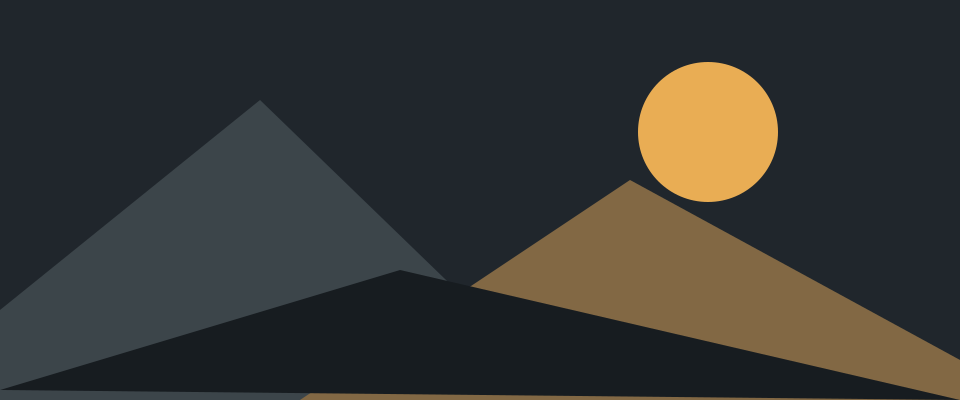

Tasarım kütüphanesi / 01
Bileşenler, bir arada.
Tipografiden etkileşimlere, Kehribar Gece'nin temel parçaları.
23 bölümBootstrap 5.3.8 · Source Sans 3Bileşenlere git
01 / Bileşenler
Tipografi
Source Sans 3 · Türkçe karakterler, başlıklar, gövde metni ve sayısal veriler.
H1 / 40 px
Bilgiye yer açın.
H2 / 32 px
Her şey yerli yerinde.
H3 / 28 px
Aylık değerlendirme
H4 / 24 px
İşlem ayrıntıları
H5 / 20 px
Müşteri bilgileri
H6 / 16 px
Son güncelleme
Gövde metni
İyi bir arayüz, önemli olanı görünür kılar.
Özgürce çalışın; işlemlerinizi, müşterilerinizi ve günlük raporlarınızı aynı yerden yönetin. Kalın vurgu, italik açıklama, işaretli bilgi, eski değer ve metin bağlantısı.
İkincil açıklama · ÇĞİÖŞÜ çğıöşü · İl / Işık · 0O / 1Il
Küçük metin: son güncelleme 22 Ekim 2026.
Sakin bir zemin. Yerinde bir vurgu.
- Okunaklı metinler
- Net bilgi hiyerarşisi
- Türkçe karakter desteği
- Toplam gelir
- ₺128.450,00
- İşlem adedi
- 1.024
Kod: btn-primary · Kısayol: Ctrl + K
03 / Bileşenler
Form alanları
Metin, seçim, tarih, dosya, renk, kayan etiket ve giriş grupları.
Alanla ilgili kısa bir yardımcı açıklama.
₺TRY
Dosya yalnızca seçilir; yüklenmez.
Boyutlar ve durumlar
04 / Bileşenler
Seçim kontrolleri
Onay kutuları, radyo düğmeleri, anahtarlar ve aralık seçimi.
05 / Bileşenler
Form doğrulama
Gönder düğmesi alanları kontrol eder. Girilen bilgiler hiçbir yere gönderilmez.
06 / Bileşenler
Tablolar
Şeritli satırlar, hover, durum rozetleri ve sağa hizalı rakamlar.
| Kayıt | Müşteri | Durum | Tutar |
|---|---|---|---|
| KG-1048 | Özgür Yazılım A.Ş. | Tamamlandı | ₺12.850,00 |
| KG-1047 | Çağrı Şimşek | Bekliyor | ₺3.200,00 |
| KG-1046 | İpek Tasarım | Taslak | ₺8.450,00 |
| Toplam | ₺24.500,00 | ||
07 / Bileşenler
Kartlar ve listeler
Başlık, içerik, görsel, alt bilgi ve seçilebilir liste.
Hızlı erişim
Kartlar aynı renk ve köşe sistemini paylaşır.
08 / Bileşenler
Rozetler
Sayı, durum ve kısa etiketler.
BirincilİkincilBaşarılıHataUyarıBilgiKısa etiket
Gelen kutusu 8 okunmamış kayıt
09 / Bileşenler
Uyarılar
Bilgi ve durum mesajları; son örnek kapatılabilir.
Yeni sürüm. Tema bileşenleri güncellendi.
Tamamlandı. Değişiklikler başarıyla kontrol edildi.
Kontrol gerekli. Bazı alanlar incelemenizi bekliyor.
İşlem tamamlanamadı. Bilgileri kontrol edip yeniden deneyin.
Bilgi. Bu sayfadaki içerikler örnektir.
Bu mesajı sağdaki düğmeyle kapatabilirsiniz.
11 / Bileşenler
Sekmeler
Aynı alanda farklı içerikler arasında geçiş yapın.
Genel özet
248 işlem tamamlandı, 12 işlem inceleme bekliyor.
Son hareketler
Yeni müşteri kaydı oluşturuldu ve aylık rapor güncellendi.
Görünüm ayarları
Sayfanın sağ üstündeki Aydınlık / Karanlık / Sistem seçimlerini deneyin.
12 / Bileşenler
Açılır menüler
Standart menü, ayrık buton ve yukarı açılan menü.
13 / Bileşenler
Akordeon
Birbirine bağlı açılır içerik bölümleri.
Bootstrap 5.3.8 bileşenleri, Kehribar Gece renkleri ve Source Sans 3 fontuyla derlenir.
Evet. Sağ üstteki radyo düğmeleriyle aydınlık, karanlık veya sistem görünümünü seçebilirsiniz.
Hayır. Bu katalogdaki formlar yalnızca görünüm ve doğrulama davranışını gösterir.
14 / Bileşenler
Açılır içerik
İsteğe bağlı ayrıntıları gösterin veya gizleyin.
Bu alan, butona yeniden bastığınızda kapanır. Kısa açıklamalar ve ek filtreler için kullanılabilir.
15 / Bileşenler
Pencereler
Odak yönetimi ve Escape ile kapanma davranışı olan modal pencere.
Arka plan tıklaması, Escape veya Kapat düğmesiyle kapatabilirsiniz.
16 / Bileşenler
Yan paneller
Sağdan açılan, kapatılabilir yardımcı panel.
17 / Bileşenler
İpuçları ve bildirimler
Tooltip, açıklama balonu ve kısa süreli toast mesajı.
İpuçları klavye odağıyla da görünür. Açıklama balonu odak ayrıldığında kapanır.
18 / Bileşenler
İlerleme ve yüklenme
İlerleme çubukları, dönen göstergeler ve yer tutucular.
Yükleniyor…
Hazırlanıyor…
19 / Bileşenler
Görseller
Duyarlı görsel, küçük resim ve açıklamalı figür.
20 / Bileşenler
Slayt gösterisi
Kendiliğinden hareket etmeyen, düğmelerle kontrol edilen içerik.
21 / Bileşenler
İçerik takibi
Kaydırılan alandaki görünür başlığa göre etkinleşen gezinme.
Başlangıç
İlk adımda gerekli bilgileri hazırlayın. Gezinme bağlantıları sizi ilgili başlığa götürür.
Bu alan sayfanın tamamından bağımsız olarak kaydırılır.
İnceleme
İkinci adımda kayıtları ve tutarları kontrol edin.
Görünür bölüm değiştiğinde üstteki etkin bağlantı da değişir.
Tamamlama
Son adımda işlemi gözden geçirin.
Bu bir içerik takibi örneğidir. Herhangi bir kayıt oluşturmaz.
22 / Bileşenler
Izgara ve yerleşim
Duyarlı sütunlar, boşluklar ve hizalama.
Tam genişlik → 8 sütun
Tam genişlik → 4 sütun
Sütun 1
Sütun 2
Sütun 3
Sütun 4
Hizalama örneği
Başa dönDar ekranda alt satıra geçer.
23 / Bileşenler
Bağlantılar ve yardımcılar
Metin bağlantıları, vurgu, ayırıcı ve kapatma düğmesi.